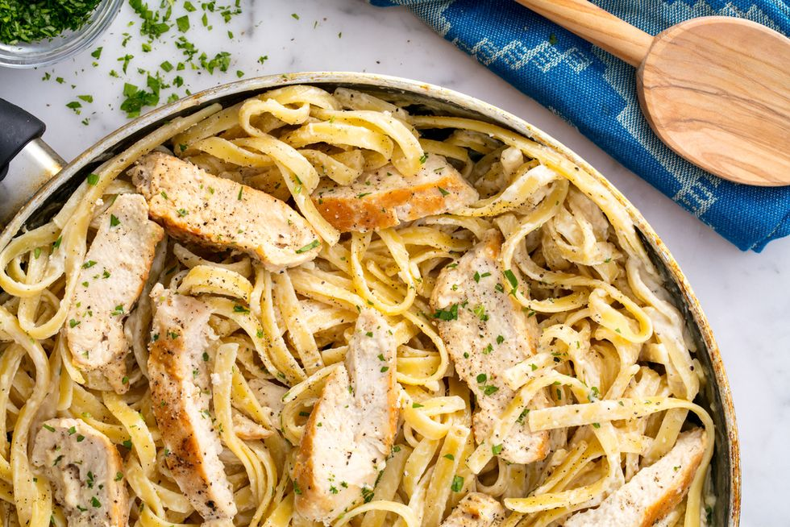

Ingredients
- 2 tbsp.extra-virgin olive oil
- 2 boneless skinless chicken breasts
- Kosher salt
- whole milk
- low-sodium chicken broth
- heavy cream
- freshly grated parmeson
Directions
- In a large skillet over medium-high heat, heat oil. Add chicken and season with salt and pepper. Cook until golden and cooked through, 8 minutes per side. Let rest 10 minutes, then slice.
- Add milk, broth, and garlic to skillet. Season with salt and pepper and bring to a simmer. Add fettuccine, stirring frequently for about 3 minutes. Let cook until al dente, 8 minutes more.
- Stir in heavy cream and Parmesan until combined. Simmer until sauce thickens.
- Remove from heat and stir in sliced chicken. Garnish with parsley.
Contact me
Email Contact
UMT Address
Chicken Alfredo Image
